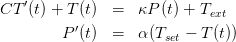
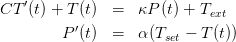

Considere o problema de valor inicial dado por
 em função do
espaçamento da malha
em função do
espaçamento da malha  . Se
. Se  pode ser aproximado por uma expressão que
depende de
pode ser aproximado por uma expressão que
depende de  ,
,  ,
,  ,
,  ,
,  ,
,  , com erro da ordem de
, com erro da ordem de  ,
ou seja,
,
ou seja,
 | (9.8) |
para cada função analítica  , dizemos que o método tem erro de truncamento
da ordem de
, dizemos que o método tem erro de truncamento
da ordem de  ou ordem de precisão
ou ordem de precisão  . Essa afirmação faz sentido
quando fazemos a seguinte análise informal: para aproximar
. Essa afirmação faz sentido
quando fazemos a seguinte análise informal: para aproximar  , acumulamos
erros da ordem
, acumulamos
erros da ordem  , para calcular
, para calcular  acumulamos os erros de
acumulamos os erros de  e novos
erros
e novos
erros  . Para calcular
. Para calcular  , acumulamos todos os erros até
, acumulamos todos os erros até  , ou seja,
, ou seja,
 vezes
vezes  . Como
. Como  , temos que os erros ao calcular
, temos que os erros ao calcular  são
da ordem . É verdade que essa análise só vale quando impomos
condições de suavidade para e condições adequada para a expressão
. Para explicar melhor esse pequeno texto,
fazemos em detalhes essa operação para o método de Euler na seção
9.3.1.
são
da ordem . É verdade que essa análise só vale quando impomos
condições de suavidade para e condições adequada para a expressão
. Para explicar melhor esse pequeno texto,
fazemos em detalhes essa operação para o método de Euler na seção
9.3.1.
Primeiro lembramos da expressão (9.4) que origina a seguinte relação de recorrência:
Para entender melhor o motivo de na expressão (9.9) aparecer e o
método ser de precisão 1, vamos a seguinte análise informal: observemos que
e o
método ser de precisão 1, vamos a seguinte análise informal: observemos que
A forma geral de obter regras de integração melhores é usar polinômios com graus
maiores. Utilizando polinômios de Lagrange passando por  obtemos
obtemos

![∫ b ∑n [ ∫ b ] ∫ b∏n
f (x)dx = f (xi) Li(x)dx + ---1---- (x − xi)f(n+1)(ξ(x))dx.
a i=1 a (n + 1 )! a i=1](main3702x.png)


A regra do trapézio consiste em aproximar a integral por um trapézio em vez de
um retângulo, como fizemos. Para isso, aproximamos  por um polinômio de
grau 1, ou seja, uma reta que pode ser obtida através de interpolação de Lagrange
como mostra a figura.
por um polinômio de
grau 1, ou seja, uma reta que pode ser obtida através de interpolação de Lagrange
como mostra a figura.

O polinômio de Lagrange que passa por  e
e
 é dado por
é dado por

 . Podemos integrar a função
. Podemos integrar a função  aproximando-a por esse
polinômio:
aproximando-a por esse
polinômio:
 |
Pelo teorema do valor médio, existe  tal que
tal que  e, portanto,
e, portanto,
![[ ] [ ]
∫ b (x − x0)2 x1 (x − x1)2 x1
f(x)dx ≈ f(x0) --------- − f(x1) ---------
a [ 2h x0 2]h x0
f′′(η) x3 x2 x1
+ ------ ---− ---(x1 + x0) + x0x1x
2 3 2 x0
(x1 − x0)2 (x0 − x1 )2
= f(x0)---------- + f(x1) ----------
′′ ( 23h 2 2h 3 2 )
+ f-(η)- x-1− x1(x + x ) + x x x − x-0+ x0(x + x ) − x x x
2 3 2 1 0 0 1 1 3 2 1 0 0 1 0
2 2
= f(x0)h--+ f(x1)h--
2h 2h
f′′(η)2x31 −-3x21(x1 +-x0) +-6x21x0 −-2x30 +-3x20(x1-+-x0) −-6x1x20
+ 2 6
h f′′(η)( )
= -(f (x0) + f (x1)) +------ x30 − 3x20x1 + 3x21x0 − x31
2 12](main3715x.png) |
tal que a regra do trapézio local é dada por
![[1 1 ] h3f′′(η)
-f (x0 ) +--f(x1) h − --------
2 2 12](main3716x.png) | (9.6) |
onde o erro local é  .
.
Exemplo 9.2.1. Use a regra do trapézio para aproximar a integral


Usando o intervalo ![[0,1]](main3720x.png) , temos
, temos  ,
,  e
e  . A regra do
trapézio resulta em
. A regra do
trapézio resulta em

![[0,1∕2]](main3725x.png) e
e ![[1 ∕2,1 ]](main3726x.png) e usando a regra do trapézio em cada
um dos intervalos, temos:
e usando a regra do trapézio em cada
um dos intervalos, temos: 

Para aproximarmos  por um polinômio de grau
por um polinômio de grau  precisamos três pontos
do intervalo
precisamos três pontos
do intervalo ![[a,b]](main3731x.png) . Utilizando
. Utilizando

 é a aproximação pelo método de Euler para o valor exato
é a aproximação pelo método de Euler para o valor exato  .
Subsequentemente, temos
.
Subsequentemente, temos 
 na passagem da segunda para terceira linha. Repetindo sucessivamente o passo
anterior, obtemos uma expressão geral para o valor exato
na passagem da segunda para terceira linha. Repetindo sucessivamente o passo
anterior, obtemos uma expressão geral para o valor exato  em termos do
valor aproximado
em termos do
valor aproximado  :
: 
 , temos ou seja, o erro entre o valor exato e o aproximado é de ordem
, temos ou seja, o erro entre o valor exato e o aproximado é de ordem  . Uma
demonstração mais formal que garante que o erro é limitado por uma expressão
que é proporcional a
. Uma
demonstração mais formal que garante que o erro é limitado por uma expressão
que é proporcional a  está discutido na seção 9.4.1.
está discutido na seção 9.4.1.
Para obter o erro de precisão do método de Euler Melhorado vamos calcular o erro de truncamento do método, ou seja, precisamos demonstrar que:
 | (9.11) |
De fato, tomando a diferença do termo da esquerda o os termos da direita, temos:

 e a equação
diferencial
e a equação
diferencial  . Portanto,
. Portanto, 
 e, torno de
e, torno de  :
:

 obtemos
obtemos


A partir de agora, usaremos a seguinte notação
 , podemos construir uma parábola através do polinômio de
Lagrange
, podemos construir uma parábola através do polinômio de
Lagrange
>>>>>>> c2790254e7e5196a945409616a59006dc5a6f1d1
 |
 |
e integrando  temos
temos


Para aproximarmos  por um polinômio de grau
por um polinômio de grau  precisamos três pontos
do intervalo, como por exemplo,
precisamos três pontos
do intervalo, como por exemplo,

 . Para isso, o polinômio de Lagrange deve ser uma
parábola:
. Para isso, o polinômio de Lagrange deve ser uma
parábola:
 |
Se usarmos o mesma metodologia da regra dos trapézios, teremos


 e integre no intervalo
e integre no intervalo ![[a,b] = [x0,x2]](main3748x.png) :
:
![∫ b [ 2 ′′
f (x )dx = f(x1 )(x − x1 ) + f ′(x1)(x-−-x1) + f--(x1-)(x − x1)3
a 2 6
f′′′(x ) ]x2
+ -----1-(x − x1 )4
24 x0
1 ∫ x2 (4) 4
+ --- f (ξ(x ))(x − x1) dx,
24 x0](main3749x.png) |
Pelo teorema do valor médio, existe  tal que
tal que
![[
∫ b ′ (x − x1)2 f ′′(x1 ) 3
f (x )dx = f(x1 )(x − x1 ) + f (x1)-------- + -------(x − x1)
a ] 2 6
f-′′′(x1) 4 x2
+ 24 (x − x1)
x0
f(4)(η )∫ x2 4
+ --24--- x (x − x1) dx
[ 0 2 ′′
= f(x )(x − x ) + f ′(x )(x-−-x1) + f--(x1-)(x − x )3
1 1 1 2 6 1
′′′ ]x2
+ f--(x1)(x − x1)4
24 x0
(4) [ ]
+ f---(η-) (x − x1)5 x2
120 x0](main3751x.png) |
Usando o fato que


 , temos
, temos 
 que substitua
que substitua  e
e  com a
seguinte estimativa
com a
seguinte estimativa

Exemplo 9.2.2. Use a regra de Simpson para aproximar a integral


Usando o intervalo ![[0,1]](main3765x.png) , temos
, temos  ,
,  ,
,  e
e  . A
regra de Simpson resulta em
. A
regra de Simpson resulta em

![[0,1∕2]](main3771x.png) e
e ![[1 ∕2,1 ]](main3772x.png) e usando a regra do trapézio em cada
um dos intervalos, temos:
e usando a regra do trapézio em cada
um dos intervalos, temos:

E 9.2.1. Calcule numericamente as seguintes integrais usando os métodos simples do Ponto médio, Trapézio e Simpson. Calcule também o valor exato usando seus conhecimentos de Cálculo I. Complete a tabela abaixo conforme modelo:
| exato | Ponto médio | Trapézio | Simpson | |
 |  |  |  |  |
 | ||||
 | ||||
 | ||||
 | ||||
 | ||||
 | ||||
Resposta.
| exato | Ponto médio | Trapézio | Simpson | |
 |  |  |  |  |
 |  | 0.25 | 0.5 | 0.3333333 |
 |  | 0.125 | 0.5 | 0.25 |
 |  | 0.3894004 | 0.1839397 | 0.3209135 |
 |  | 0.8 | 0.75 | 0.7833333 |
 |  | 0.4 | 0.25 | 0.35 |
 |  | 0.6666667 | 0.75 | 0.6944444 |

E 9.2.2. Dados os valores da função  ,
,  ,
,  e
e
 , calcule o valor aproximado de
, calcule o valor aproximado de

Resposta. Resp:  ,
,  e
e  .
.

E 9.2.3. Dê a interpretação geométrica dos métodos do ponto médio, trapézio e Simpson. A partir desta construção geométrica, deduza as fórmulas para aproximar

Resposta.


E 9.2.4. Calcule numericamente o valor de  usando os métodos
compostos do ponto médio, trapézio e Simpson. Obtenha os resultados utilizando,
em cada quadratura, o número de pontos indicado.
usando os métodos
compostos do ponto médio, trapézio e Simpson. Obtenha os resultados utilizando,
em cada quadratura, o número de pontos indicado.
| n | Ponto médio | Trapézios | Simpson | |
 | ||||
 | ||||
 | ||||
 | ||||
Resposta.
| n | Ponto médio | Trapézios | Simpson | |
 | 0.1056606 | 0.7503919 | 0.5005225 | |
 | 0.1726140 | 0.3964724 | 0.2784992 | |
 | 0.1973663 | 0.3062023 | 0.2393551 | |
 | 0.2084204 | 0.2721145 | 0.2306618 | |
 <<<<<<< HEAD
<<<<<<< HEAD
E 9.2.5. Use as rotinas construídas em aula e calcule numericamente o valor das seguintes integrais usando o método composto dos trapézios para os seguintes números de pontos:
![|-----|--|∫------2---|∫----------|---∫-------------------|-----∫---−--1----------|
| n |h | 01e−4x dx | 011+1x2dx | 01x4(1 − x)4dx | 01e x2+1dx |
|-----|--|-----------|-----------|-----------------------|-----------------------|
|-17--|--|-0.4409931--|-----------|-----------------------|-----------------------|
| | | | | | |
|-33--|--|-0.4410288--|-----------|-----------------------|-----------------------|
| | | | | | |
|-65--|--|-0.4410377--|-----------|-----------------------|-----------------------|
|129 | | 0.4410400 | | | |
|-----|--|-----------|-----------|-----------------------|-----------------------|
|257 | | 0.4410405 | | | |
|-----|--|-----------|-----------|-----------------------|-----------------------|
|513 | | 0.4410406 | | | |
|-----|--|-----------|-----------|-----------------------|-----------------------|
|1025-|----0.4410407---0.7853981---1.5873015873016--⋅-10−3--4.6191723776309--⋅ 10−1-
| |](main3825x.png)
>>>>>> c2790254e7e5196a945409616a59006dc5a6f1d1 id="tailmainse40.html">